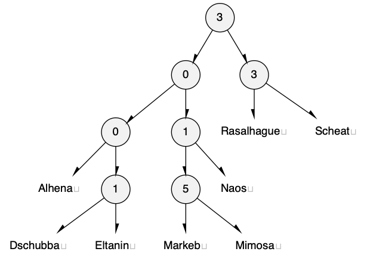
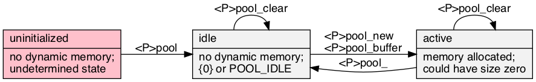

trie_result
enum trie_result { TRIE_RESULT };
A result of modifying the table, of which TRIE_ERROR is false. 
Stand-alone header src/trie.h; examples test/test_trie.c; article doc/trie.pdf. On a compatible workstation, make creates the test suite of the examples.

A <T>trie is a prefix-tree, digital-tree, or trie: an ordered set or map of immutable key strings allowing efficient prefix queries. The strings used here are any encoding with a byte null-terminator, including modified UTF-8.
The implementation is as Morrison, 1968 PATRICiA: a compact binary radix trie, only storing the where the key bits are different. It uses some B-tree techniques described in Bayer, McCreight, 1972 Large for grouping the nodes in a compact, cache-friendly manner.
<T> that satisfies C naming conventions when mangled; required. <PT> is private, whose names are prefixed in a manner to avoid collisions.TRIE_VALUE is an optional payload type to go with the string key. TRIE_KEY_IN_VALUE is an optional <PT>key_fn that picks out the key from the of value, otherwise it is an associative array from a string key to value, <PT>entry.typedef <PT>value <PT>entry;
On TRIE_VALUE and not TRIE_KEY_IN_VALUE, otherwise it's just an alias for <PT>value.
typedef const char *(*<PT>key_fn)(<PT>entry);
If TRIE_KEY_IN_VALUE is set, responsible for picking out the null-terminated string from the <PT>value, (in which case, the same as <PT>entry.)
typedef int(*<PT>replace_fn)(<PT>entry *original, <PT>entry *replace);
A bi-predicate; returns true if the replace replaces the original; used in <T>trie_policy_put.
typedef void(*<PSTR>to_string_fn)(<PSTR>element_c, char(*)[12]);
src/to_string.h: responsible for turning the argument into a 12-char null-terminated output string.
typedef void(*<PT>action_fn)(<PT>entry);
Works by side-effects, ie fills the type with data. Only defined if TRIE_TEST.
enum trie_result { TRIE_RESULT };
A result of modifying the table, of which TRIE_ERROR is false.
struct <T>trie_entry { const char *key; <PT>value value; } typedef struct <T>trie_entry <PT>entry;
On TRIE_VALUE but not TRIE_KEY_IN_VALUE, creates a map from key to value as an associative array.
struct <T>trie;
To initialize it to an idle state, see <T>trie, TRIE_IDLE, {0} (C99), or being static.

const static <PT>entry *<PT>next(struct <PT>iterator *const it){ assert(it); printf("_next_\n"); if(!it ->trie)return 0; assert(it ->current &&it ->end); if(&it ->current ->trunk ==it ->end){ if(it ->leaf >it ->leaf_end ||it ->leaf >it ->current ->trunk .bsize){ it ->trie = 0; return 0; } } else if(it ->leaf >it ->current ->trunk .bsize){ const char *key = <PT>to_key(it ->current ->leaf[it ->current ->trunk .bsize]); const struct trie_trunk *trunk1 = &it ->current ->trunk; struct trie_trunk *trunk2, *next = 0; size_t h2 = it ->trie ->node_height, bit2; struct { unsigned br0, br1, lf; } t2; int is_past_end = !it ->end; assert(key); printf("next: %s is the last one on the tree.\n", key); for(it ->current = 0, trunk2 = it ->trie ->root, assert(trunk2), bit2 = 0;; trunk2 = trie_inner(trunk2)->leaf[t2 .lf].link){ int is_considering = 0; if(trunk2 ==trunk1)break; assert(trunk2 ->skip <h2), h2 -=1 +trunk2 ->skip; if(!h2){ printf("next: bailing.\n"); break; } t2 .br0 = 0, t2 .br1 = trunk2 ->bsize, t2 .lf = 0; while(t2 .br0 <t2 .br1){ const struct trie_branch *const branch2 = trunk2 ->branch +t2 .br0; bit2 +=branch2 ->skip; if(!TRIE_QUERY(key, bit2))t2 .br1 = ++t2 .br0 +branch2 ->left; else t2 .br0 +=branch2 ->left +1, t2 .lf +=branch2 ->left +1; bit2 ++; } if(is_past_end){ is_considering = 1; } else if(trunk2 ==it ->end){ is_past_end = 1; if(t2 .lf <it ->leaf_end)is_considering = 1; } if(is_considering &&t2 .lf <trunk2 ->bsize)next = trunk2, it ->leaf = t2 .lf +1, printf("next: continues in tree %s, leaf %u.\n", orcify(trunk2), it ->leaf); } if(!next){ printf("next: fin\n"); it ->trie = 0; return 0; } while(h2)trunk2 = trie_inner_c(trunk2)->leaf[it ->leaf].link, it ->leaf = 0, assert(trunk2 ->skip <h2), h2 -=1 +trunk2 ->skip; it ->current = <PT>outer(trunk2); } return it ->current ->leaf +it ->leaf ++; } static void <PT>clear_r(struct trie_trunk *const tr, size_t height, struct <PT>outer_tree **const one){ unsigned i; assert(tr &&height >tr ->skip &&one); if(height -=1 +tr ->skip){ for(i = 0; i <=tr ->bsize; i ++)<PT>clear_r(trie_inner(tr)->leaf[i].link, height, one); free(trie_inner(tr)); } else if(!*one){ *one = <PT>outer(tr); } else { free(<PT>outer(tr)); } } struct <T>trie_iterator { struct <PT>iterator i; };
Advances it. Frees tr at h and it's children recursively. Stores any one outer tree in one. height is the node height, (height plus one.) Stores an iteration range in a trie. Any changes in the topology of the trie invalidate it.
| Modifiers | Function Name | Argument List |
|---|---|---|
| static void | <T>trie | trie |
| static void | <T>trie_ | trie |
| static int | <T>trie_from_array | trie, array, array_size |
| static <PT>entry * | <T>trie_match | trie, key |
| static <PT>entry | <T>trie_get | trie, key |
| static enum trie_result | <T>trie_try | trie, entry |
| static int | <T>trie_put | trie, x, /*const fixme*/eject |
| static int | <T>trie_policy | trie, x, eject, replace |
| static void | <T>trie_prefix | trie, prefix, it |
| static const <PT>entry * | <T>trie_next | it |
| static size_t | <T>trie_size | it |
| static const char * | <STR>to_string | box |
| static void | <T>trie_test |
static int <T>trie_from_array(struct <T>trie *const trie, <PT>type *const *const array, const size_t array_size)
Initializes trie from an array of pointers-to-<T> of array_size.
array_size)static <PT>entry *<T>trie_match(const struct <T>trie *const trie, const char *const key)
trie for potential key matches, but will ignore the values of the bits that are not in the index.key|)static <PT>entry <T>trie_get(const struct <T>trie *const trie, const char *const key)
key in trie or null no such item exists.key|), Thareja 2011, Data.static enum trie_result <T>trie_try(struct <T>trie *const trie, <PT>entry entry)
Adds a pointer to x into trie if the key doesn't exist already.
x is already in trie, or an error occurred, returns false.errno = 0 before to tell if the operation failed due to error.key|)static int <T>trie_put(struct <T>trie *const trie, const <PT>entry x, <PT>entry */*const fixme*/eject)
Updates or adds a pointer to x into trie.
key|)static int <T>trie_policy(struct <T>trie *const trie, const <PT>entry x, <PT>entry *eject, const <PT>replace_fn replace)
Adds a pointer to x to trie only if the entry is absent or if calling replace returns true or is null.
replace does not return true, this will be a pointer to x.key|)static void <T>trie_prefix(struct <T>trie *const trie, const char *const prefix, struct <T>trie_iterator *const it)
Fills it with iteration parameters that find values of keys that start with prefix in trie.
it with the entire trie, use the empty string.trie. Calling <T>trie_next will iterate them in order.trie.size) or Ο(|prefix|)static const <PT>entry *<T>trie_next(struct <T>trie_iterator *const it)
Advances it.
static size_t <T>trie_size(const struct <T>trie_iterator *const it)
Counts the of the items in initialized it.
it|)static const char *<STR>to_string(const <PSTR>box *const box)
src/to_string.h: print the contents of box in a static string buffer of 256 bytes, with limitations of only printing 4 things at a time. <STR> is loosely contracted to be a name <X>box[<X_TO_STRING_NAME>].
static void <T>trie_test(void)
Will be tested on stdout. Requires TRIE_TEST, and not NDEBUG while defining assert.
2020 Neil Edelman, distributed under the terms of the MIT License.